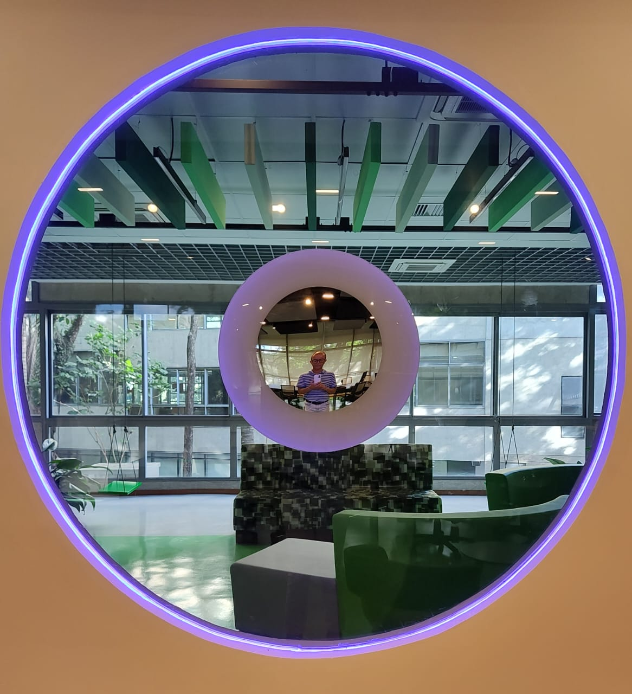

Prof. Dr. Roberto M. Cesar Jr.
Full Professor
Department of Computer Science, IME-USP
University of São Paulo (USP)

Biography
Roberto M. Cesar Jr. holds a BSc in Computer Science from São Paulo State University (IBILCE – UNESP, 1992), an MSc in Electrical Engineering from the University of Campinas (UNICAMP, 1993), and a PhD in Physics from the University of São Paulo (USP, 1997). He is currently a Full Professor in the Department of Computer Science at the Institute of Mathematics and Statistics (IME) – USP, and an Associate Researcher at InovaUSP.
He served as a member of the FAPESP Computer Science Area Panel (2006–2012) and as a reviewer for the CAPES Triennial Evaluation Committee for Computer Science (2007–2009, 2010–2012). He was Director of the USP eScience Research Center and Head of the Department of Computer Science at IME-USP. From 2010 to 2012, he was also a researcher at CTBE – CNPEM. From 2006 to 2023, he acted as Scientific Advisor to the Scientific Director of FAPESP and was responsible for the CEPID and Engineering Research Center programs. He is a member of the São Paulo State Academy of Sciences (ACIESP) and has delivered invited lectures at several conferences, including SIBGRAPI 2011, SHAPES 2.0 (2012), and eSon – IEEE eScience 2013. He is co-creator of the ScriptLattes tool and serves as Associate Editor for Pattern Recognition and the Journal of the Brazilian Computer Society.
His research interests span Mathematical and Engineering aspects of Computer Science, with emphasis on Computer Vision, Pattern Recognition, Image Processing, Bioinformatics, and eScience. His full list of publications and citations is available at: Google Scholar.
Research Areas
- Computer Vision
- Machine Learning
- Artificial Intelligence
- Data Science